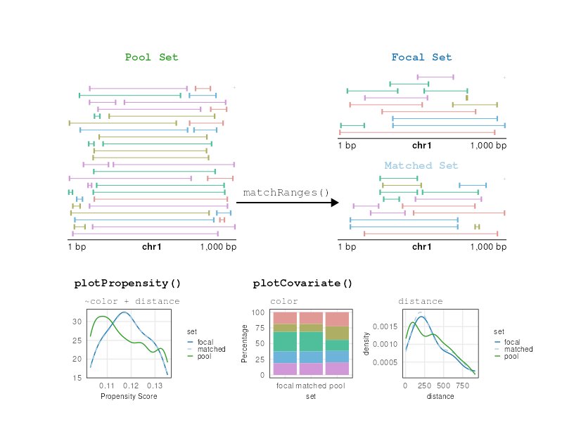
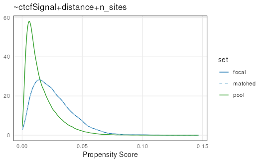
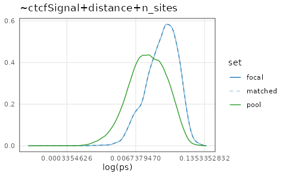
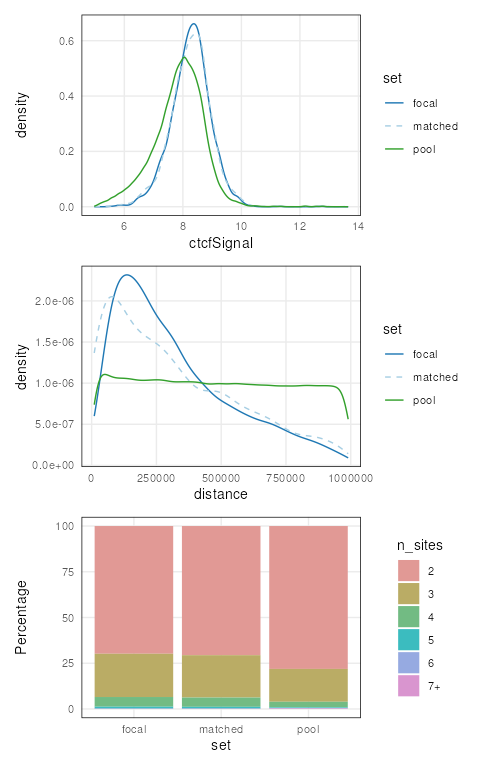
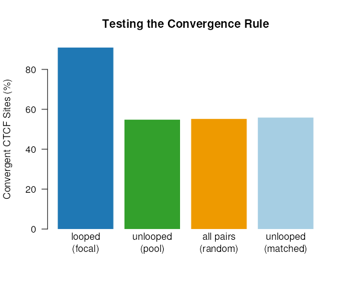

vignettes/matching_ginteractions.Rmd
matching_ginteractions.RmdIn this vignette, we demonstrate the generation of covariate-matched null ranges by using the matchRanges() function to test the “covergence rule” of CTCF-bound chromatin loops, first described in Rao et al. 2014.
In 2014, in situ Hi-C was used to probe the spatial organization of the human genome and identify 3D structures - such as chromatin loops - characterized by high contact frequency. Chromatin loops can be formed by loop-extrusion, where the ring-like cohesin complex extrudes chromatin until stopped by a bound CTCF transcription factor. Therefore, most validated loops are bound at both ends by a CTCF motif. The convergence rule purports that the vast majority (>90%) of CTCF-bound loops occur in a convergent orientation, where the asymetric CTCF motifs at each anchor face one another. This is a highly significant finding since we would only expect to find convergently-oriented CTCF motifs 25% of the time by chance.
Here, we generate a set of null-hypothesis ranges to more rigorously test the convergence rule. We will use hg19_10kb_ctcfBoundBinPairs data from the nullrangesData package which contains features from the GM12878 cell line aligned to hg19. hg19_10kb_ctcfBoundBinPairs is a GInteractions object with all interactions between ctcf-bound 10Kb bins within 1Mb annotated with the following features:
Using these annotations and the matchRanges() function, we can compare CTCF motif orientations between pairs of genomic regions that are 1) connected by loops, 2) not connected by loops, 3) randomly chosen, or 4) not connected by loops, but matched for the strength of CTCF sites and distance between loop anchors.

matchRanges()
Before we generate our null ranges, let’s take a look at our example dataset:
library(nullrangesData)
## Load example data
data("hg19_10kb_ctcfBoundBinPairs")
binPairs <- hg19_10kb_ctcfBoundBinPairs
binPairs## StrictGInteractions object with 198120 interactions and 5 metadata columns:
## seqnames1 ranges1 seqnames2 ranges2 |
## <Rle> <IRanges> <Rle> <IRanges> |
## [1] chr1 230001-240000 --- chr1 520001-530000 |
## [2] chr1 230001-240000 --- chr1 710001-720000 |
## [3] chr1 230001-240000 --- chr1 800001-810000 |
## [4] chr1 230001-240000 --- chr1 840001-850000 |
## [5] chr1 230001-240000 --- chr1 870001-880000 |
## ... ... ... ... ... ... .
## [198116] chrX 154310001-154320000 --- chrX 154370001-154380000 |
## [198117] chrX 154310001-154320000 --- chrX 155250001-155260000 |
## [198118] chrX 154320001-154330000 --- chrX 154370001-154380000 |
## [198119] chrX 154320001-154330000 --- chrX 155250001-155260000 |
## [198120] chrX 154370001-154380000 --- chrX 155250001-155260000 |
## looped ctcfSignal n_sites distance convergent
## <logical> <numeric> <factor> <integer> <logical>
## [1] FALSE 5.18038 2 290000 FALSE
## [2] FALSE 5.46775 2 480000 TRUE
## [3] FALSE 7.30942 2 570000 FALSE
## [4] FALSE 7.34338 2 610000 FALSE
## [5] FALSE 6.31338 3 640000 TRUE
## ... ... ... ... ... ...
## [198116] FALSE 6.79246 2 60000 FALSE
## [198117] FALSE 6.12447 3 940000 TRUE
## [198118] FALSE 7.40868 2 50000 TRUE
## [198119] FALSE 7.00936 3 930000 FALSE
## [198120] FALSE 6.73402 3 880000 TRUE
## -------
## regions: 20612 ranges and 5 metadata columns
## seqinfo: 23 sequences from hg19 genomeLet’s start by defining our focal set (i.e. looped bin-pairs), our pool set (i.e un-looped bin-pairs), and our covariates of interest (i.e. ctcfSignal and distance):
library(nullranges)
set.seed(123)
mgi <- matchRanges(focal = binPairs[binPairs$looped],
pool = binPairs[!binPairs$looped],
covar = ~ctcfSignal + distance + n_sites,
method = 'stratified')
mgi## MatchedGInteractions object with 3104 interactions and 5 metadata columns:
## seqnames1 ranges1 seqnames2 ranges2 |
## <Rle> <IRanges> <Rle> <IRanges> |
## [1] chr11 62160001-62170000 --- chr11 62190001-62200000 |
## [2] chr17 7890001-7900000 --- chr17 7990001-8000000 |
## [3] chr22 36460001-36470000 --- chr22 36680001-36690000 |
## [4] chr11 1560001-1570000 --- chr11 1710001-1720000 |
## [5] chr12 31780001-31790000 --- chr12 31830001-31840000 |
## ... ... ... ... ... ... .
## [3100] chr2 20980001-20990000 --- chr2 21180001-21190000 |
## [3101] chr19 14310001-14320000 --- chr19 14540001-14550000 |
## [3102] chr2 20060001-20070000 --- chr2 20840001-20850000 |
## [3103] chr14 100750001-100760000 --- chr14 100850001-100860000 |
## [3104] chr11 1840001-1850000 --- chr11 2170001-2180000 |
## looped ctcfSignal n_sites distance convergent
## <logical> <numeric> <factor> <integer> <logical>
## [1] FALSE 8.12860 2 30000 FALSE
## [2] FALSE 8.72976 3 100000 TRUE
## [3] FALSE 9.51410 4 220000 TRUE
## [4] FALSE 8.64759 3 150000 FALSE
## [5] FALSE 8.43412 2 50000 TRUE
## ... ... ... ... ... ...
## [3100] FALSE 8.10867 2 200000 TRUE
## [3101] FALSE 8.13800 2 230000 FALSE
## [3102] FALSE 8.46727 2 780000 FALSE
## [3103] FALSE 8.52685 4 100000 TRUE
## [3104] FALSE 8.39022 3 330000 TRUE
## -------
## regions: 20612 ranges and 5 metadata columns
## seqinfo: 23 sequences from hg19 genomeWhen the focal and pool arguments are GInteractions objects, matchRanges() returns a MatchedGInteractions object. The MatchedGInteractions class extends GInteractions so all of the same operations can be applied:
library(plyranges)
library(ggplot2)
## Summarize ctcfSignal by n_sites
mgi %>%
regions() %>%
group_by(n_sites) %>%
summarize(ctcfSignal = mean(ctcfSignal)) %>%
as.data.frame() %>%
ggplot(aes(x = n_sites, y = ctcfSignal)) +
geom_line() +
geom_point(shape = 21, stroke = 1, fill = 'white') +
theme_minimal() +
theme(panel.border = element_rect(color = 'black',
fill = NA))
We can get a quick summary of the matching quality with overview():
ov <- overview(mgi)
ov## MatchedGInteractions object:
## set N ctcfSignal.mean ctcfSignal.sd distance.mean distance.sd
## focal 3104 8.3 0.67 320000 230000
## matched 3104 8.3 0.71 320000 250000
## pool 195016 7.9 0.85 490000 290000
## unmatched 191912 7.8 0.85 490000 290000
## n_sites.0 n_sites.1 n_sites.2 n_sites.3 n_sites.4 n_sites.5 n_sites.6
## 0 0 2167 734 164 32 4
## 0 0 2191 719 157 30 3
## 0 0 152318 34992 5971 944 158
## 0 0 150127 34273 5814 914 155
## n_sites.7+ ps.mean ps.sd
## 3 0.026 0.016
## 4 0.026 0.016
## 633 0.016 0.013
## 629 0.015 0.013
## --------
## focal - matched:
## ctcfSignal.mean ctcfSignal.sd distance.mean distance.sd n_sites.0 n_sites.1
## -2.8e-05 -0.047 -250 -26000 0 0
## n_sites.2 n_sites.3 n_sites.4 n_sites.5 n_sites.6 n_sites.7+ ps.mean ps.sd
## -24 15 7 2 1 -1 -1.7e-07 -7.4e-07In addition to provding a printed overview, the overview data can be extracted for convenience. For example, the quality property shows the absolute value of the mean difference between focal and matched sets. Therefore, the lower this value, the better the matching quality:
ov$quality## [1] 1.7e-07Let’s visualize overall matching quality by plotting propensity scores for the focal, pool, and matched sets:
plotPropensity(mgi, sets = c('f', 'p', 'm'))
Log transformations can be applied to ‘x’, ‘y’, or both (c('x', 'y')) for plotting functions to make it easier to assess quality. It is clear that the matched set is very well matched to the focal set:
plotPropensity(mgi, sets = c('f', 'p', 'm'), log = 'x')
We can ensure that covariate distributions have been matched appropriately by using the covariates() function to extract matched covariates along with patchwork and plotCovarite to visualize all distributions:
library(patchwork)
plots <- lapply(covariates(mgi), plotCovariate, x=mgi, sets = c('f', 'm', 'p'))
Reduce('/', plots)
Using our matched ranges, we can compare the percent of looped pairs with at least one convergent CTCF site against unlooped pairs, randomly selected pairs, and pairs that are unlooped but have been matched for our covariates. The accessor function focal() and pool() can be used to conveniently extract these matched sets:
## Generate a randomly selected set from all binPairs
all <- c(focal(mgi), pool(mgi))
set.seed(123)
random <- all[sample(1:length(all), length(mgi), replace = FALSE)]
## Calculate the percent of convergent CTCF sites for each group
g1 <- (sum(focal(mgi)$convergent) / length(focal(mgi))) * 100
g2 <- (sum(pool(mgi)$convergent) / length(pool(mgi))) * 100
g3 <- (sum(random$convergent) / length(random)) * 100
g4 <- (sum(mgi$convergent) / length(mgi)) * 100
## Visualize
barplot(height = c(g1, g2, g3, g4),
names.arg = c('looped\n(focal)', 'unlooped\n(pool)',
'all pairs\n(random)', 'unlooped\n(matched)'),
col = c('#1F78B4', '#33A02C', 'orange2', '#A6CEE3'),
ylab = "Convergent CTCF Sites (%)",
main = "Testing the Convergence Rule",
border = NA,
las = 1)
It looks like the converget rule holds, even when controlling for CTCF signal strength and bin pair distance. Our looped group has > 90% convergent CTCF sites, while our other groups have about 25% per CTCF site on average.